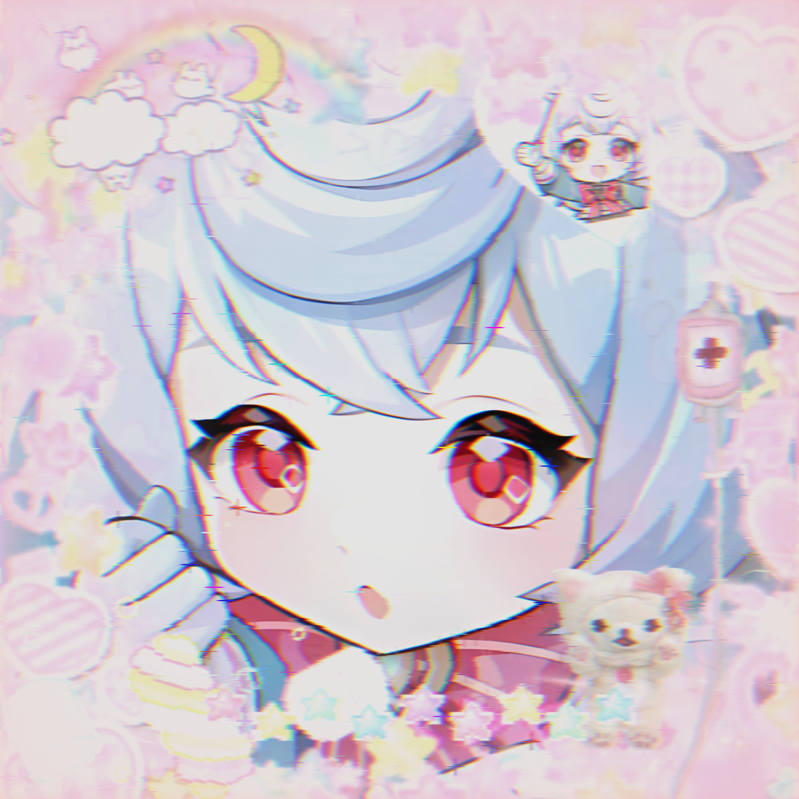

|
"Rise of Sol" - Cassie 2023    The city at night is completely different to what its like during the day. It's dark, quiet, and at this hour, almost all the lights in all the windows are off, except for one. In that lonely glowing spec, sitting in a sea of black, is the apartment of the greatly respected scientist, Frank Konstantin. Ding! Frank gets startled for a moment, but as he looks to the source he quickly realizes it's just his phone, a notification. He picks it up to see the news headline: “Negotiations break down, Triboxians demand unconditional surrender!” There's not much time left, he knows that if he doesn't come up with a way to stop the invasion soon then humanity will fall before it even gets the chance to rise. Ever since 2109 humanity, under the banner of “The Democratic Republic of Sol” (which is less of a united government and more of a sort of union between the existing nations), had been at war with an alien government known as the Imperial Triboxian Federation due to disputes over who should own the resource rich Alpha Centauri B solar system. The fighting has since moved on to the home solar system, known as Sol in the Galactic community.Frank had been working day and night, running from his apartment to his labs, making sure everything is perfectly in check and not resting for even a second since the first Triboxian ship entered Sol. Now, sleep deprived, and running entirely on coffee, he finally found the solution. It's ready. He looks outside his window to find the sun already rising; another sleepless night. He grabs his papers and puts on his coat, before beginning a mad dash to the lab. The city was beautiful as he ran through it, the sun shone in between the intricately decorated and colourful apartment blocks, and trees lined the sides of the road which he ran through, with the occasional car or bike being scattered around the street. Finally, after what felt like hours of running, he got to the lab and gave in his invention. His co-workers cheered and before he knew it, he and his team were sitting in front of the generals and admirals of Sol’s military, presenting the results of this world-changing project. A virus. A universal virus that infects and kills anyone who is an alien, any member of a species which doesn't originate from earth. If allowed to, this virus could kill continents, but surely the government wouldn't be so inhumane as to let that happen right? The generals and admirals murmur to each other discussing it between themselves for a few minutes, that to Frank and his team felt almost like hours. They all sat there, still and nervous, waiting to get the results of their hard labour, before suddenly, the chatting stopped and the man in the middle of the room spoke up. “After having discussed, with the Admirals and Generals, along with having contacted the politicians, I, Samuel Cornelius Fairchild, the Head Chief of the Republican Military of Sol, hereby announce that your proposal is to be taken in, without further delay. You and your team will be awarded with the highest honours, and shall receive the greatest gratitude, for your great contribution to humanity’s cause. You are now dismissed.” The team left and as they exited the building they knew they could finally release their excitement and cheered, finally after so much hard work, they had finally done it. There are still a few processes left but this was the main one and they had done it. The next morning news broke that within a few days the classified weapon will be unleashed against the encroaching Triboxian fleet. The package would come in the form of a huge amount of very tiny remote controlled missiles, designed to be able to the ship's electrical system, when someone goes to repair the tiny hole caused by the undetected missile, they will get infected, and within a day, everyone else on the ship will also have the virus. On March 12th, 2112, three years after the war began, the humans used their last resort, to absolutely devastating effect. The next day the Triboxian ships were on the run, trying as quickly as possible to get back to a friendly base. To the horror of Mr. Konstantin and his team though, their weapon continued to be used, and the push didn't stop once Alpha Centauri was taken, the human fleet and army kept pushing the Triboxians further and further, all the way to their home planet. Frank was given all the awards he could've possibly asked for, and even more. He even won military medals and got praise from all of humanity but somehow it was all empty. Watching the news, the actions of humanity kept getting worse every day until, finally, the news read: “Triboxian government surrendered with absurd civilian and military casualties. Humanity has won a stunning victory over an evil enemy, today is a day of celebration!” Everyone knew what they really meant to say. Humanity has destroyed an incredible amount of innocent Triboxian lives over this war. This was no regular war anymore. He dared not speak though, in his mind, the blame was all on him. |

|